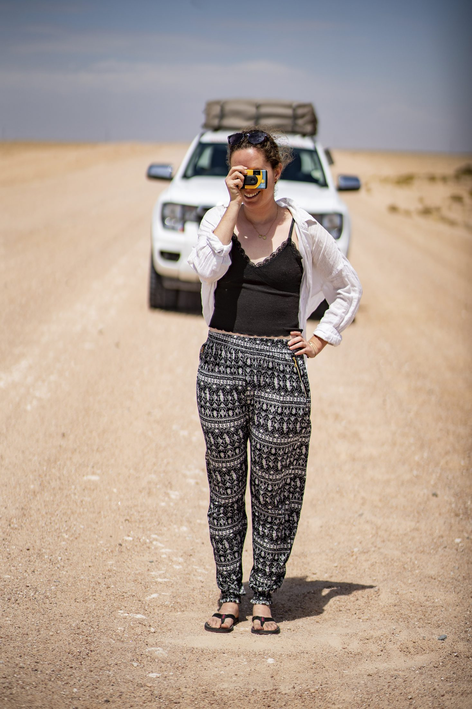

MIRA BENDER
Fotografin in Köln, spezialisiert auf authentische Porträts und dokumentarische Fotografie. Ich fange Momente so ein, wie sie sich anfühlen – nicht nur wie sie aussehen. Ich liebe es, einen dokumentarischen Ansatz mit bewusster Inszenierung zu verbinden.
KONTAKT
mail@mirabender.de
+49 123 456 789
AUSBILDUNG
2025 — Diplom, Fotoakademie Köln
2019 — Master of Science, Universität zu Köln
AUSSTELLUNGEN
2026 — Gruppenausstellung, Augsburg
2025 — Kunstmesse Ruhr, Essen